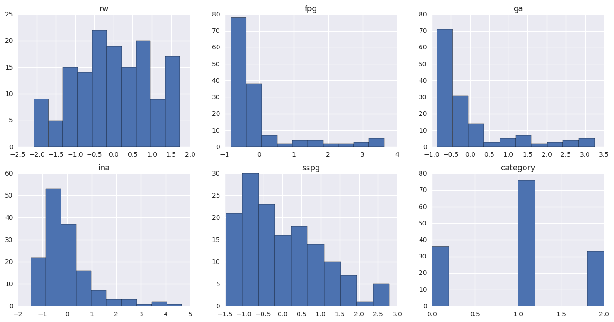

chemdiab dataset example¶
Data fom locfit R package.
Numeric variables are rw, fpg, ga, ina and sspg. Classifier cc is the Diabetic type.
Originally from Reaven, G. M. and Miller, R. G. (1979). An attempt to define the nature of chemical diabetes using a multidimensional analysis. Diabetologia 16, 17-24.
In [1]:
# import data
import numpy as np
import inspect
from os import path
dtype = [("rw",np.float64),("fpg",np.float64),("ga",np.float64),
("ina",np.float64),('sspg', np.float64),('cc', 'S20')]
file_path = path.dirname(path.abspath(
inspect.getfile(inspect.currentframe())))
file_path = path.join(path.dirname(file_path),"chemdiab.tab")
chemdiab = np.genfromtxt("chemdiab.tab", names=True,
dtype=dtype)
# get only numeric columns as numpy array
nam_cols = list(chemdiab.dtype.names[0:5])
num_cols = chemdiab[nam_cols]
num_cols = num_cols.view(np.float64)\
.reshape(num_cols.shape + (-1,))
cat, ind = np.unique(chemdiab[chemdiab.dtype.names[5]],
return_inverse=True)
In [2]:
# clean and visualize data
from sklearn.preprocessing import StandardScaler, FunctionTransformer
from cartographer.filterers import KernelDensityFilterer
from seaborn import plt
std_scaler = StandardScaler()
scaled = std_scaler.fit_transform(num_cols)
fig, axs = plt.subplots(2,3, figsize=(16,8))
flat_axs = axs.flatten()
for i, name in enumerate(nam_cols):
flat_axs[i].hist(scaled[:,i])
flat_axs[i].set_title(name)
flat_axs[5].hist(ind)
flat_axs[5].set_title("category")
fig
/home/travis/miniconda/envs/cartographer/lib/python3.5/site-packages/matplotlib/font_manager.py:273: UserWarning: Matplotlib is building the font cache using fc-list. This may take a moment.
warnings.warn('Matplotlib is building the font cache using fc-list. This may take a moment.')
/home/travis/miniconda/envs/cartographer/lib/python3.5/site-packages/matplotlib/font_manager.py:273: UserWarning: Matplotlib is building the font cache using fc-list. This may take a moment.
warnings.warn('Matplotlib is building the font cache using fc-list. This may take a moment.')
Out[2]:

In [3]:
from cartographer.mapper import Mapper
from cartographer.coverers import HyperRectangleCoverer
from sklearn.cluster import DBSCAN
from cartographer.visualization import html_graph
from IPython.core.display import HTML
m = Mapper(coverer=HyperRectangleCoverer(intervals=10, overlap=0.5),
filterer=KernelDensityFilterer(bandwidth=1.0),
clusterer=DBSCAN(min_samples=5,eps=2.))
m.fit(scaled)
HTML(html_graph(m, {"ind": ind}, {"kde": m.filterer.transform(scaled)}))
Out[3]: